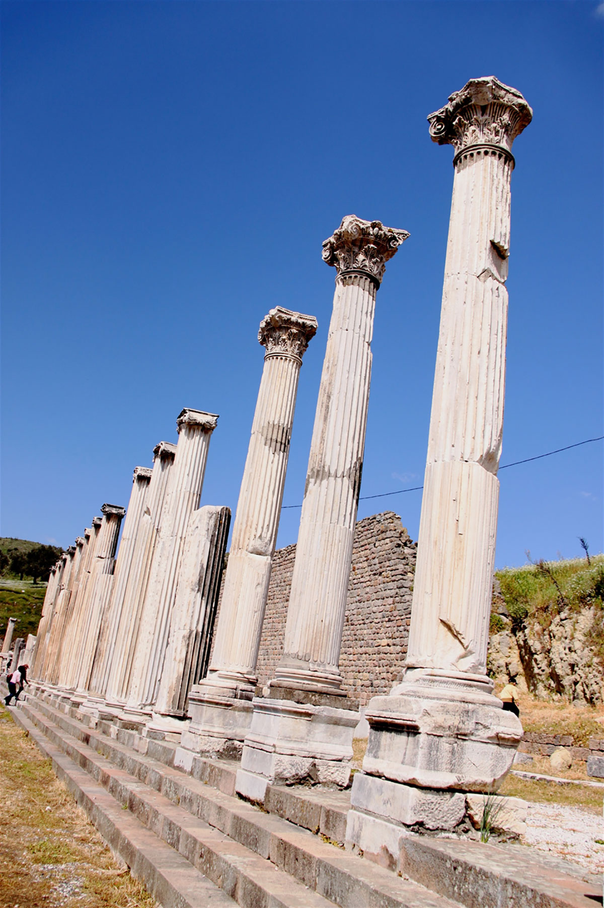
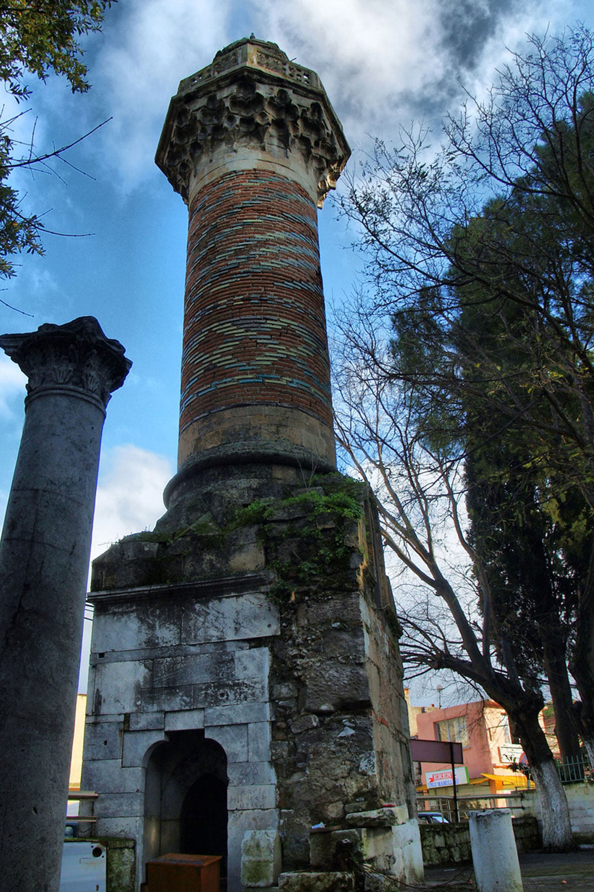
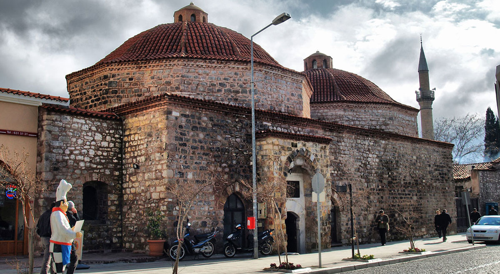
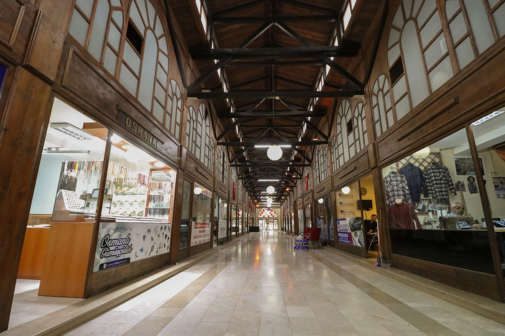

Nerelere Gidilir?
KOZAK YAYLASI

Türkiye’nin en kaliteli çam fıstıklarının yetiştiği, bir doğa cennetidir. Antik Dönemden bu yana çam fıstığı, üzümü ve şarabı meşhurdur. Bölgede, Aşağıbey Köyü yakınlarında Roma Döneminden kalma Kaplıcalar ve Antik Perperene kenti yer almaktadır. Piknik alanları da bulunan yaylada; doğa ve köy turları yapılmakta, ayrıca dağcılık, av turizmi gibi etkinlikler düzenlenmektedir.
SELİNOS VE ANTİK ÇAĞA TANIKLIK EDEN KÖPRÜLERİ

Antik Selinos Nehri’ni adeta bir gerdanlık gibi süsleyen Tarihi Bergama Köprüleri ağırlıklı olarak Roma Döneminde inşa edilmişlerdir. Osmanlılar tarafından çeşitli zamanlarda onarımları yapılan köprülerin kullanımı halen devam etmektedir.
KALE MAHALLESİ VE BERGAMA EVLERİ

Yaşayan en eski Bergama Evi örnekleri 18. yüzyıla aittir. Bergama’da birbirinden farklı ev tipleri vardır. Bunlar; hımış tekniğinde yapılmış Osmanlı dönemine ait geleneksel Türk Evleri ve batı etkili kagir, Rum Evleri ile 20. yüzyılın ilk çeyreğinden itibaren yapılmaya başlanan karma sistemdeki Cumhuriyet Dönemi evleridir. Gelişmiş plan özellikleri ve kapı-pencere, saçak, baca, kat silmesi, kapalı veya açık çıkmaları ile karakteristik cephe düzenleriyle Bergama evlerinin tamamı tescilli olup koruma altına alınmıştır.
AKROPOL
Helenistik dönemin en görkemli yerleşim merkezlerinden olan Bergama Akropol’ünün tarihi, M.Ö. VII.-VI. yüzyıllara kadar gitmektedir. Kent İ.Ö. 284-133 tarihleri arasında 150 yıl süren Pergamon Krallığı’nın başkenti olmuştur. Bergama Akropolü; Kale Tepesi’nde yapılan teraslamalar üzerine kurulmuş; tapınakları, sokakları, sosyal ve ticari meydanları ile Helenistik Dönemin en muhteşem şehir merkezlerindendir. Zeus Sunağı, Dionysos Tapınağı, Athena Tapınağı, Demeter Tapınağı, 200 bin tomar kitaptan oluşan ünlü Pergamon Kütüphanesi, Tiyatro, Gymnasion, Kral Sarayları, Traian Tapınağı, Su yolları, çeşmeler, sarnıçlar, Arsenaller Bergama Akropolü’nde inşa edilmiş dünyaca ünlü anıtlardır.
ASKLEPİON
”Ölümün Yasaklandığı, Vasiyetnamelerin Açılmadığı Yer” Modern tıbbın ve eczacılığın merkezi olan ve antik çağın en büyük sağlık yurdu olan Bergama Asklepion’u, İ.Ö. 4yy’de Sağlık Tanrısı Asklepios’a adanarak yapılmış ve İ.S. IV. yüzyıla kadar ünlü bir tedavi merkezi olarak etkinliğini sürdürmüştür. Üç temel öğe olan perhiz, sıcak ve soğuk banyo ile beden hareketlerinden oluşan tedavi şekillerinin yanında buluntulardan, küçük operasyonlarında yapıldığı anlaşılan Asklepion’da ilaçla, şifalı bitkilerle, müzikle, su sesi, telkin ve rüya tabirlerine dayalı psikoterapi, çamur ve güneş banyolarıyla tedavi yöntemleri uygulanırdı. Bergama’nın güney batısında, sulak ve yeşil bir vadi içinde kurulan Asklepion’a yaklaşık 1 km uzunlunda ki Kutsal Yol (Via Tecta) ile ulaşılırdı. Asklepion Kütüphanesi, Tiyatrosu, Tapınakları, Kutsal Su ve Çeşmesi, Yeraltı Geçidi (Kriptoportikos) ile bugün konuklarını ağırlamaktadır. 1976 yılından itibaren düzenlenmeye başlanan Uluslararası Grup Psikoterapileri Kongresi 1984 yılından bu yana her yıl Bergama Asklepion’unda düzenlenmektedir.
SELÇUKLU MİNARE
Minarenin kare plânlı kürsüsü mermerden, gövde ise kesme taş ve tuğladan yapılmıştır. Kürsünün doğu cephesinde Bursa kemerli bir niş bulunur. Minareye giriş kuzey cephesinde yer alan yine Bursa kemerli niş içinde sivri kemerli kapıdan sağlanır. Kürsünün batı cephesindeki duvar kalıntısı minarenin camii harimine bitişik yapıldığını gösterir. Kürsüden silindirik minare gövdesine geçişte pabuç kısmından prizmatik üçgenler bulunur. Gövdenin alt kısmında geometrik baklava motifi, üst kısmında ise gövdeyi helezon şekilde çevreleyen patlıcan moru, firuze ve yeşile çalan sarı renkli sırlı ve ayrıca sırsız tuğlalardan oluşturulmuş süsleme programı görülür. Şerefe altı korkuluğa kadar genişleyerek mukarnas dizilerinden oluşturulmuştur. Sekiz kenarlı mermer korkuluk ajurlu geometrik süslemelidir. Sekizgen prizma şekilli petek taşa açılan yuvalara yerleştirilen ve ayrıca ortalarından duvara çivilenen altıgen tuğlalarla kaplanmıştır. Basit silmeyle geçilen taş külah oldukça basıktır. Minarenin ait olduğu camii yıktırılmış ve bu camiiye ait herhangi bir kitabe bugüne kadar bulunamamıştır.
ÜRETİCİ KÖYLÜ PAZARI

Vatandaşlarımızın yerel ve doğal ürünlere ulaşımını sağlayacak Üretici Köy Pazarı 2015 yılında faaliyete geçirilmiştir. Kendi ürününü doğal koşullarda yetiştiren ve kırsalda yaşayan üreticilerimizin de tüketici konumundaki vatandaşlarımızın da Pazardan memnun olduğu gözlemlenmektedir.
ARASTA-OSMANLI ÇARŞISI
14.ve 15. yüzyıldan itibaren şekillenmeye başlayan Bergama Arastası, yüzyıllar boyunca farklı zana-atlara ev sahipliği yapmıştır. Bergama Arastası; çizmeciler, pabuççular, manifaturacılar, saraçlar ve zahireciler adında farklı loncaların bir araya gelmesinden oluşmuştur. Her loncanın küçük ve yanyana sıralanmış dükkânları Çınarlı Meydanlara bakmaktadır. Farklı dönemlerde Arasta içine han ve bedesten gibi ticari faaliyetlerin daha kolay sürdürülmesini sağlayan birimler de eklenmiştir. Günümüze ulaşan yapıların çoğunluğu 19. yüzyıldan kalmadır. Bu tarihin daha eskiye gidememesinin sebebi 1853 yılındaki büyük yangındır. Arasta içindeki dükkanların dış cephe onarımları 2007 – 2008 yılları arasında Bergama Belediyesi tarafından yapılmıştır.
SERAPİON TAPINAĞI (KIZIL AVLU)

Antik Pergamon’un ovada kalan en gösterişli yapısıdır. Gerek tasarımı, gerekse dev boyutları ile hayranlık uyandıran eser, kült ve sanat tarihi verilerine göre Roma İmparatoru Hadrianus zamanında (M.S.117-138) Mısır Tanrısı Serapis’e ithaf edilmiştir. Tapınak; M.S.V.yüzyılın ortalarında Erken Bizans döneminde ana binanın içine iki sıra sütun ilave edilerek üç nefli, bazilikal planlı bir kilise haline getirilerek Aziz Johannes’e adanmıştır. İncil de adı geçen Anadolu’nun ilk ‘’Yedi Kilise’’sinden biri olma ünvanına sahiptir. Tapınağın kuzeyinde kalan kule biçimli yuvarlak yapı Osmanlılar döneminde cami olarak kullanılmaya başlanmış ve halen Kurtuluş Camisi olarak hizmet vermektedir. Tapınağın hemen yanında bir havra da bulunmaktadır. Çok tanrılı Antik Çağ inanışları yanında üç ilahi dine de ev sahipliği yapan tapınak inanç turizmi açısından son derece önemlidir.
MEVLANA HACI HEKİM HAMAMI
Hacı Hekim Cami’sine vakfedi-len hamam erkekler ve kadınlar için iki bölüme ayrılmıştır. 22 x 30 m ölçüsünde olan Hamam toplam 24 kubbe ile örtülüdür. Değişik zamanlarda çeşitli onarımlar geçirmekle birlikte, 2008 yılında Vakıflar Bölge Müdürlüğü tarafından esaslı onarımı yapılmıştır.
BERGAMA ULU (YILDIRIM) CAMİ
Günümüze kadar gelebilmiş Bergama’daki Türk dönemi yapıları içerisinde en büyük ve en eski tarihli camidir. Selçuklu sanatının etkisini taşıyan mihrap zengin mermer bezemeye sahiptir. Portal kapısı üzerindeki inşa kitabesinde caminin Sultan Beyazid tarafından 1398-1399 yılında inşa ettirildiği yazılıdır. Cami avlusunu süsleyen taş şadırvanın üzerindeki hat yazısı Bergamalı Şair Aşki Efendi’ye aittir.
YIĞMA TEPE TÜMÜLÜSÜ

Günümüze kadar gelebilmiş Bergama’daki Türk dönemi yapıları içerisinde en büyük ve en eski tarihli camidir. Selçuklu sanatının etkisini taşıyan mihrap zengin mermer bezemeye sahiptir. Portal kapısı üzerindeki inşa kitabesinde caminin Sultan Beyazid tarafından 1398-1399 yılında inşa ettirildiği yazılıdır. Cami avlusunu süsleyen taş şadırvanın üzerindeki hat yazısı Bergamalı Şair Aşki Efendi’ye aittir.
BERGAMA BELEDİYESİ KLEOPATRA GÜZELLİK ILICASI TESİSİ

Türkiye’nin en kaliteli çam fıstıklarının yetiştiği, bir doğa cennetidir. Antik Dönemden bu yana çam fıstığı, Bergama Belediyesi Güzellik Ilıcası Sosyal Tesisleri Kleopatra Cafe – Restaurant , aquapark , piknik alanı ile vatandaşlarımıza hizmet vermektedir. Kleopatra Cafe’de düğün, sünnet, nişan, doğum günü ve özel günlerde, yemek organizasyonlarında Bergamalılara hizmet vermektedir. Piknik alanın da mangal ve semaver servisi mevcuttur.
BERGAMA MÜZESİ

Bergama Müzesi 30 Ekim 1936 tarihinde açılmış ve Genç Türkiye Cumhuriyeti’nin ilk Arkeolojik Kazı Müzesidir. Müze binası, Zeus Sunağı planı dikkate alınarak hazırlanmıştır. 1979 yılında da Müze’ye etnografya bölümü eklenmiştir. Müzedeki Erken Tunç Döneminden Bizans Dönemine kadar değişik dönemlere ait arkeolojik eserlerin çoğu Bergama ve çevresinde yapılan kazılardan çıkmıştır. Civardaki antik yerleşimlerden çıkan buluntular içinde Pergamon heykeltraşlık ekolüne ait örnekler, Pitane ve Gryneion’dan gelen Arkaik Dönem buluntuları, Myrina terracottaları dikkat çekmektedir. Etnografya salonunda yöreye ait geleneksel Türk el sanatlarının en nadide parçalarından olan dünyaca ünlü Bergama halı ve kilimleri (Yuntdağ, Yağcıbedir, Kozak Bergama dokumaları), kumaş dokuma örnekleri, el emeği işlemeler sergilenmektedir.
KAPALI ÇARŞI
ARASTA